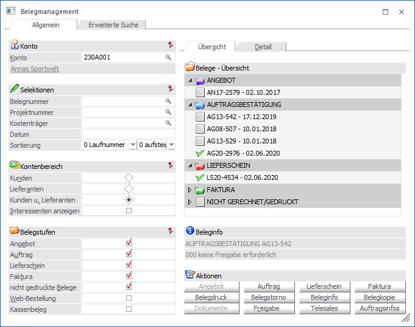
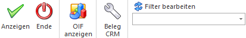

Mit Hilfe des Menüpunkts…
1 WinLine FAKT
1 Erfassen
1 Belegverwaltung
1 Belegmanagement
… erhält man einerseits eine umfangreiche und detaillierte Übersicht über die bestehenden Belege und andererseits die Möglichkeit, diese Belege einfach und schnell zu stornieren, kopieren, drucken, usw.

Das Fenster ist in die folgenden Bereiche unterteilt, welche in den nachfolgenden Kapiteln detailliert beschrieben werden:
ü Register "Allgemein" ("Selektion und Anzeige" bzw. "Aktionen")
In dem Register
"Allgemein" findet die Grundselektion und die Anzeige der Belege statt.
Zusätzlich können die Belege bearbeitet bzw. neue Belege erfasst werden.
ü Register "Erweiterte Suche"
In dem
Register "Erweiterte Suche" können erweiterte Selektionen für die Anzeige der
Belege getroffen werden.
Buttons

Ø Anzeigen
Durch Anwahl des Buttons "Anzeigen" bzw. der Taste F5 werden die Belege, gemäß der getroffenen Selektion, angezeigt. Für die Anzeige wird hierbei automatisch in das Register "Allgemein" gewechselt.
Ø Ende
Durch Anwahl des Buttons "Ende" bzw. der Taste ESC wird der Programmbereich beendet.
Ø OIF anzeigen
Durch Anwahl des Buttons "OIF anzeigen" wird im rechten Teil des Bildschirms ein Informationsbereich eingeblendet. In diesem werden Daten zum Konto und dem ausgewählten Beleg angezeigt.
Ø Beleg CRM
Mit Hilfe des Buttons "Beleg CRM" kann in das Fenster "Belege - CRM-Ansicht" gewechselt werden. Dort ist es möglich bestehende CRM-Fälle des Belegs zu betrachten, neue Fälle zu erfassen oder bestehende Fälle mit dem Beleg zu verknüpfen bzw. die Verknüpfungen zu entfernen.
Ø Filter bearbeiten
Durch Anklicken des Buttons "Filter bearbeiten" kann die Belegsuche nach frei definierbaren Kriterien eingeschränkt werden.